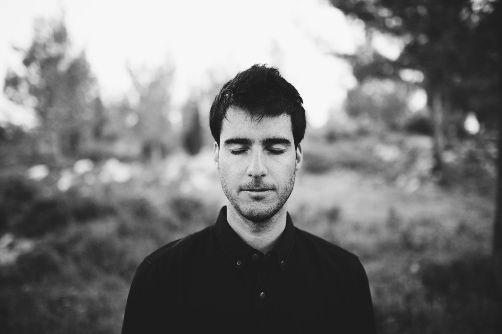
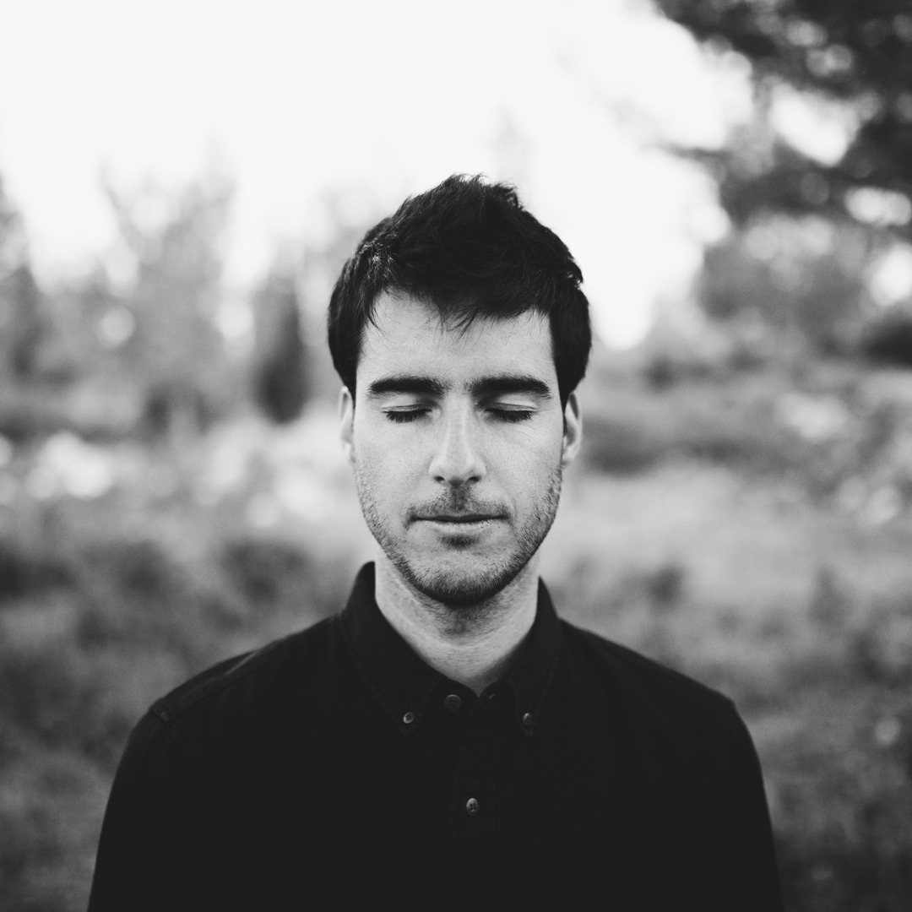
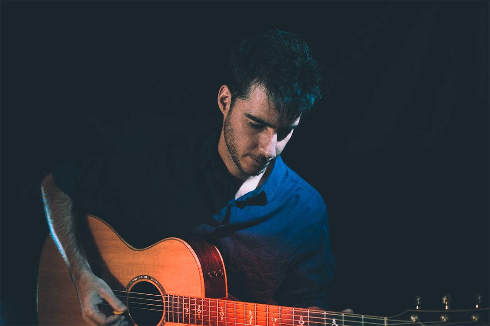
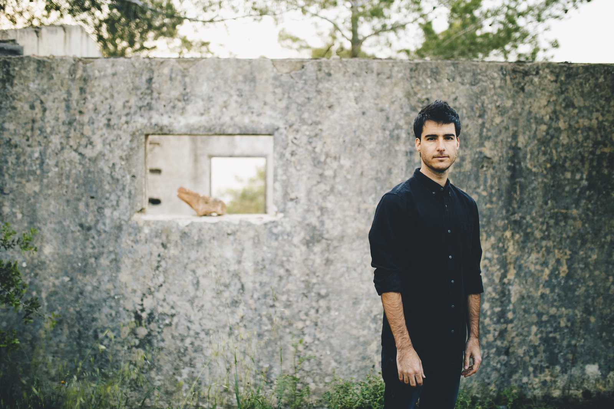
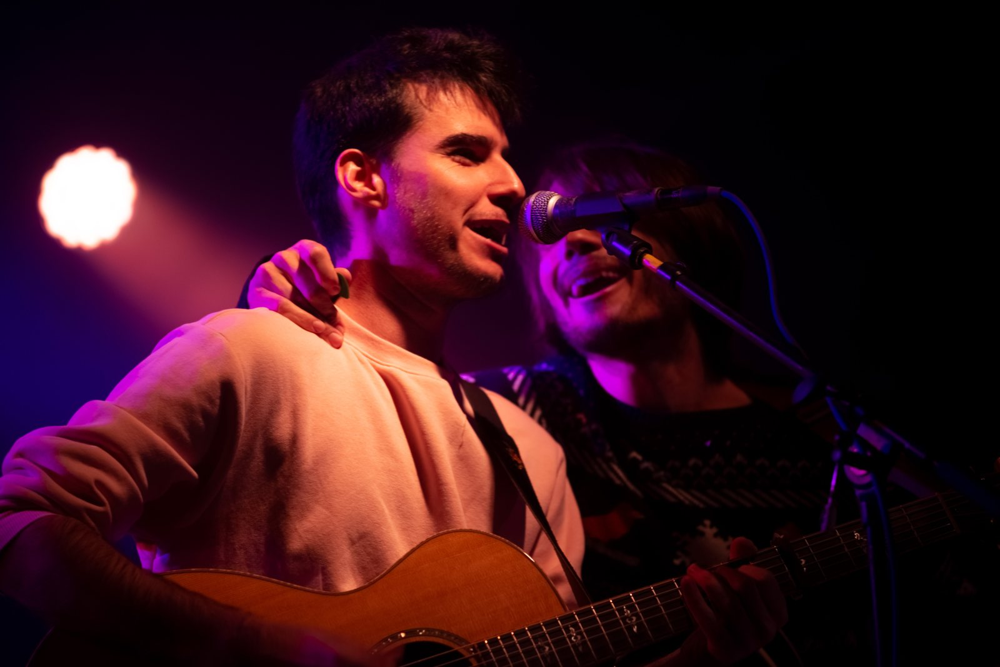
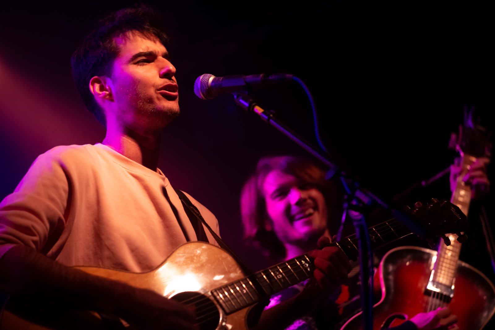
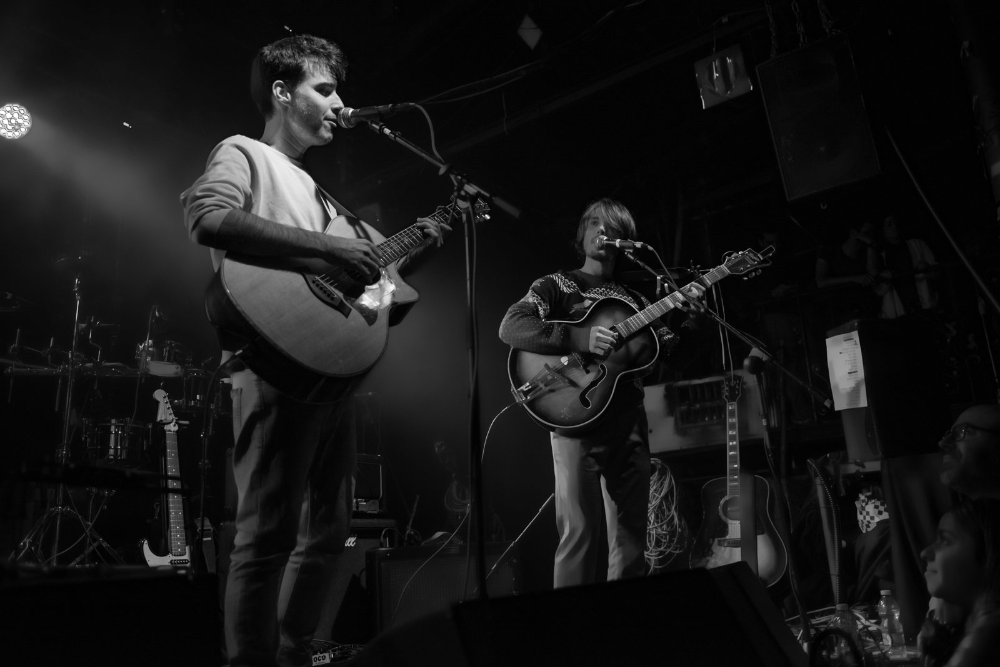
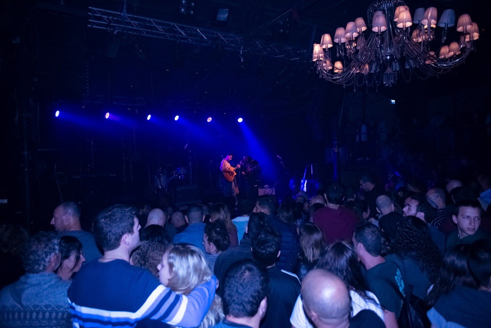
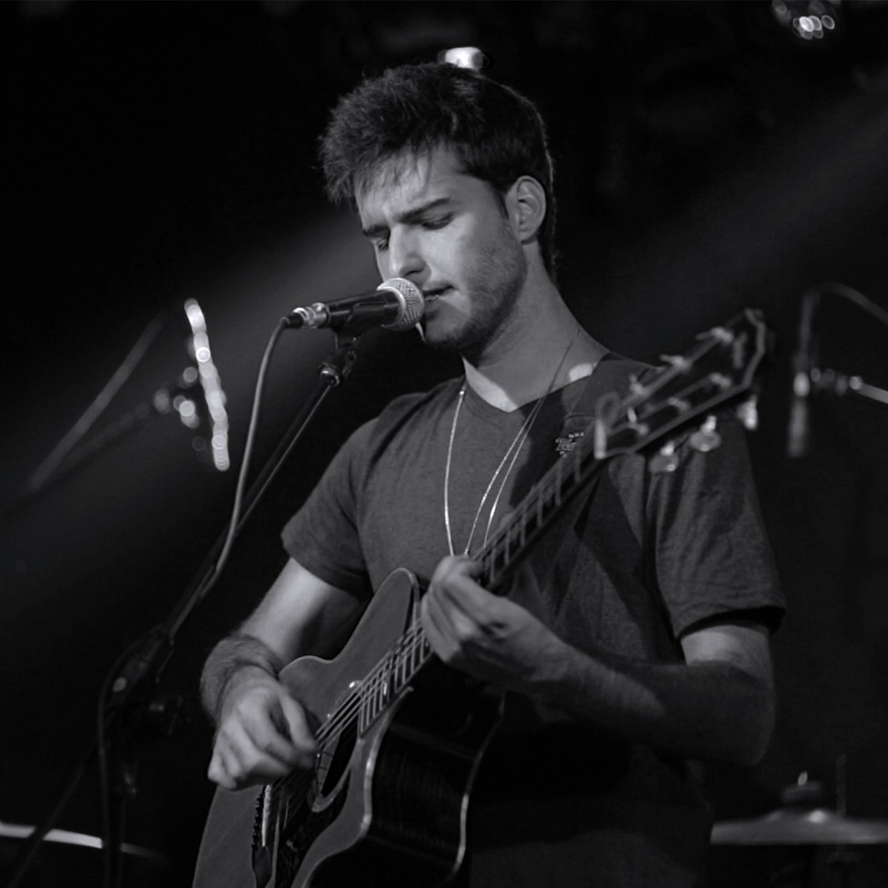

Knaan Shabtay is a Swiss-born singer-songwriter whose songs move between singer-songwriter, indie folk, alternative and rock. He studied music in London, released the Lost In Time EP in 2014 and the Far From Home EP in 2018, and put out his first full album, Teaching Paper Birds To Fly, in January 2023. A new album is planned for 2027.
Electronic press kit
Knaan Shabtay
Swiss-born singer-songwriter, at home in indie folk, alternative and rock.

Videos
A Night Full Of Stars (Live)Watch on YouTube
Sunrise (Live Session)Watch on YouTube
Let It GoWatch on YouTube
Bio
Knaan Shabtay is a Swiss-born singer-songwriter whose songs move between singer-songwriter, indie folk, alternative and rock.
He moved to London to study music, and in 2014 he released his debut EP, Lost In Time. Its single, Stay A Little Longer, reached radio in Switzerland and beyond. After a UK tour he released the Far From Home EP in 2018, followed in 2019 by singles including You Won't Say It First and 1999, and the live EP A Night Full Of Stars (Live).
His first full album, Teaching Paper Birds To Fly, came out in January 2023. He is now working on a new album planned for 2027, and plays solo, as a duo or with a full band.
Knaan Shabtay is a Swiss-born singer-songwriter whose songs move between singer-songwriter, indie folk, alternative and rock.
He moved to London to study music, and in 2014 he released his debut EP, Lost In Time. Its single, Stay A Little Longer, reached radio in Switzerland and beyond.
In 2016 his live video for Sunrise drew warm notices from music blogs. Stephen Carradini of Independent Clauses wrote: "Cascading, patterned acoustic guitar notes layer on top of each other to create an impressive waterfall of sound." Amir Ascher wrote about the song on his Haaretz blog and described it as an emotional letter in a bottle.
After a UK tour he released the Far From Home EP in 2018. In 2019 he followed it with singles including You Won't Say It First and 1999, and with the live EP A Night Full Of Stars (Live). That December he opened for Ehud Banai.
His first full album, Teaching Paper Birds To Fly, came out on 15 January 2023 with ten songs. After that release he spent some time focusing on his personal life, and then came back to writing.
He is now working on a new album planned for 2027. On stage he plays solo on acoustic or electric guitar, as a duo, or with a full band.
Press
"Cascading, patterned acoustic guitar notes layer on top of each other to create an impressive waterfall of sound. The breathy, high-pitched vocals and electric guitar notes add to the beautiful maelstrom."
In 2016 Amir Ascher wrote about "Sunrise" on his Haaretz blog and described it as an emotional letter in a bottle.
"You Won't Say It First" was featured on Eco99's online playlist "החדשים והנכונים" in 2019.
Highlights
- Debut EP Lost In Time (2014). Its single Stay A Little Longer reached radio in Switzerland and beyond.
- Live video for Sunrise (2016) noticed by Independent Clauses and on Amir Ascher's Haaretz blog.
- UK tour (2017).
- Opened for Ehud Banai (December 2019).
- You Won't Say It First featured on Eco99's online playlist "החדשים והנכונים" (2019).
- First full album, Teaching Paper Birds To Fly (15 January 2023).
- New album planned for 2027.
Press photos















